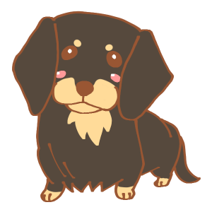
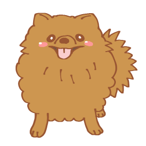

ABOUT
このサイトは私の好きな犬についてのランキングを作ってみました。
今年度の授業を振り返り、頑張って調べながら作りました。
小型犬編
| １位！！！ | マルチーズ。現在飼っている子がマルチーズだからです。 |
|---|---|
| ２位！！ |  ミニチュア・ダックスフンド。 |
| ３位！ |  ポメラニアン。いつか飼ってみたいわんこ。 |
中型犬編
| １位！！！ | 柴犬。日本犬といえば、柴犬！ |
|---|---|
| ２位！！ |  ビーグル。 |
| ３位！ |  ブルドッグ。 |
大型犬編
| １位！！！ |  ダルメシアン。お金持ちの子が買っているイメージ |
|---|---|
| ２位！！ |  ラブラドール・レトリバー。 |
| ３位！ |  セント・バーナード。どっしり、お相撲さん体型。 |